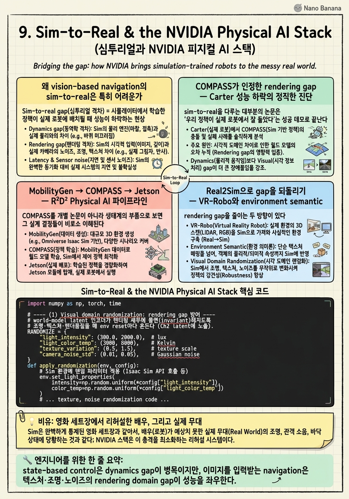

Sim-to-Real & the NVIDIA Physical AI Stack

🎯 학습 목표
- sim-to-real gap이 vision-based navigation에서 특히 어려운 이유를 안다
- MobilityGen 합성데이터 → COMPASS 학습 → Jetson 배치 파이프라인을 설명한다
- Real2Sim(VR-Robo)이 gap을 줄이는 접근을 이해한다
- TensorRT inference latency/메모리 관점에서 배치 제약을 평가할 수 있다
- COMPASS가 GR00T N의 synthetic data 생성기로 위치하는 의미를 안다
지금까지 우리는 COMPASS를 시뮬레이션 안에서 완성했다. IL로 mobility prior를 심고(Ch2~3), residual RL로 embodiment에 적응시키고(Ch4), distillation으로 하나의 generalist로 통합했다(Ch5~6). 그러나 로봇 논문의 진짜 시험은 시뮬레이터 밖 — 실제 복도, 실제 창고, 실제 조명 아래 — 에서 정책이 작동하는가다. 이 챕터는 그 마지막 관문인 sim-to-real transfer를 다루며, COMPASS가 왜 처음부터 이 관문을 통과하도록 설계되었는지를 밝힌다.
핵심 주장은 두 가지다. 첫째, vision-based navigation의 sim-to-real gap은 dynamics gap보다 rendering domain gap이 지배한다 — 즉 물리가 아니라 '픽셀이 얼마나 진짜 같은가'가 병목이다. COMPASS 논문 스스로 Isaac Lab에서 Carter 성능이 원 X-Mobility보다 하락했음을 인정하며, 그 원인을 route 단순화와 image rendering quality 변화로 지목한다. 이 정직한 자기 진단이 이 챕터의 출발점이다.
둘째, COMPASS는 고립된 논문이 아니라 NVIDIA의 Physical AI 스택(R²D²) 안의 한 부품이다. MobilityGen이 대규모 합성 motion 데이터를 만들고, COMPASS가 그 위에서 mobility를 학습하며, TensorRT로 컴파일되어 Jetson Orin/Thor에 배치되고, 나아가 GR00T N 같은 humanoid VLA foundation model의 synthetic data 생성기로도 위치한다. 이 챕터는 개별 기법을 넘어, COMPASS가 어떤 생태계적 역할을 수행하는지 — 그리고 그 역할이 sim-to-real이라는 난제를 어떻게 시스템 수준에서 우회하는지 — 를 조망한다.
핵심 내용
왜 vision-based navigation의 sim-to-real은 특히 어려운가
Sim-to-real gap(심투리얼 격차) = 시뮬레이터에서 학습한 정책이 실제 로봇에 배치될 때 성능이 하락하는 현상. 원인은 시뮬레이션과 현실 사이의 모든 불일치다.
전통적 로봇 학습에서 이 gap의 주범은 dynamics gap이었다 — 마찰계수, 관성, actuator 지연, 접촉 물리가 실제와 다르다. state-based(관절 각도·속도를 직접 입력) 정책에서는 이 물리 불일치가 지배적이라, domain randomization으로 마찰·질량을 흔들어 강건하게 만드는 것이 표준 처방이었다.
그러나 COMPASS는 image를 입력받는 vision-based navigation 정책이다. 여기서는 병목이 물리에서 픽셀로 옮겨간다. 정책이 실제로 보는 것은 카메라 이미지이고, 시뮬레이터의 렌더링된 이미지와 실제 카메라 이미지 사이에는 텍스처·조명·그림자·반사·노이즈·모션블러의 미묘한 차이가 존재한다. 이 차이가 곧 rendering domain gap(렌더링 도메인 격차)이다 — dynamics가 완벽해도 픽셀 분포가 다르면 latent state 인코더가 out-of-distribution 입력을 만나 붕괴한다.
| 구분 | State-based control | Vision-based navigation |
|---|---|---|
| 정책 입력 | 관절 각도·속도 등 저차원 상태 | 카메라 image(고차원 픽셀) |
| 지배적 gap | dynamics(마찰·관성·지연) | rendering(텍스처·조명·노이즈) |
| 표준 처방 | physics domain randomization | visual domain randomization + 고충실도 렌더링 |
| 실패 양상 | 접촉·균형 불안정 | 인코더 OOD → latent 붕괴 |
이 관점 전환이 이 챕터 전체를 관통한다. COMPASS가 X-Mobility의 latent world model을 backbone으로 쓰는 것 자체가 부분적 방어책이다 — 원시 픽셀 대신 압축된 latent state에서 정책이 동작하므로, 렌더링 차이가 latent 공간에서 흡수될 여지가 생긴다. 그러나 latent 인코더 자체가 sim 픽셀로 학습되었다면 그 방어는 불완전하며, 여기서 뒤에 볼 개선 방향(다양한 rendering condition을 latent state 학습에 노출)과 Real2Sim이 등장한다.
COMPASS가 인정한 rendering gap — Carter 성능 하락의 정직한 진단
sim-to-real을 다루는 대부분의 논문은 '우리 정책이 실제 로봇에서 잘 돌았다'는 성공 데모로 끝난다. COMPASS의 서술이 값진 이유는 그 반대 — 자기 파이프라인이 어디서 성능을 잃었는지를 명시하기 때문이다.
COMPASS는 원래의 X-Mobility가 학습·평가되던 환경과 다른 Isaac Lab 환경에서 Carter를 재평가했을 때, Carter 성능이 원 X-Mobility 대비 하락했음을 인정한다. 원인으로 두 가지를 지목한다. 첫째는 route의 단순화 — 평가에 쓰인 경로가 원 설정보다 단순해지면서 정책이 학습한 분포와 어긋났다. 둘째, 그리고 더 중요한 것은 image rendering quality의 변화다. 같은 물리·같은 로봇이라도 렌더러가 만들어내는 픽셀의 질감이 달라지면, 앞 절에서 말한 rendering domain gap이 sim-내부에서조차 발생한다.
이 사실은 sim-to-real gap이 '시뮬레이션 대 현실'만의 문제가 아니라 '렌더링 조건 대 렌더링 조건'의 문제임을 폭로한다. 즉 sim → real 전이가 아니라 sim(rendering A) → sim(rendering B) 전이에서조차 gap이 나타난다. 이는 gap의 본질이 물리적 현실성이 아니라 정책이 보는 이미지 분포의 이동(distribution shift)임을 보여준다 — Chapter 3에서 배운 covariate shift가 픽셀 도메인으로 재등장한 것이다.
COMPASS가 제시하는 개선 방향은 여기서 자연스럽게 도출된다. 다양한 rendering condition을 latent state 학습 단계에 노출시키는 것이다. world model 인코더가 하나의 렌더링 스타일이 아니라 조명·텍스처·렌더 품질이 광범위하게 흔들린 이미지들을 보고 latent를 학습하면, latent 표현이 렌더링 세부에 불변(invariant)해진다. 이것이 vision domain randomization의 latent-space 버전이며, 다음 절의 domain randomization 코드와 직접 연결된다.
이 진단이 주는 연구적 교훈은 크다. cross-embodiment mobility의 다음 병목은 새 RL 알고리즘이 아니라 인코더의 rendering-invariance라는 것이다. morphology gap(Ch4~7)을 residual RL로 넘었듯이, rendering gap은 latent 학습의 시각적 다양성으로 넘어야 한다.
MobilityGen → COMPASS → Jetson — R²D² Physical AI 파이프라인
COMPASS를 개별 논문이 아니라 생태계의 부품으로 보면 그 설계 결정들이 비로소 이해된다. NVIDIA의 R²D²(Robotics Research & Development Digest, 2025.04)는 sim-centric robotics를 위한 워크플로우 제품군으로, 세 축을 엮는다.
-
MobilityGen — Isaac Sim 기반의 대규모 synthetic motion dataset 생성기(SDG, synthetic data generation). cross-embodiment·cross-environment로 로봇의 이동 궤적·센서 관측을 대량 합성한다. COMPASS의 IL·distillation 데이터의 원천이 될 수 있는 층이다.
-
COMPASS — 그 데이터 위에서 cross-embodiment mobility를 학습하고(IL → residual RL → distillation), Isaac Lab에서 fine-tuning하며, zero-shot sim2real로 배치되는 mobility 학습 스택.
-
HOVER — humanoid whole-body controller로, 여러 제어 모드를 하나로 통합한다. COMPASS의 mobility 명령을 실제 humanoid 관절 제어로 실현하는 하위 층에 해당한다(Ch6의 joint controller 계층과 같은 자리).
전체 파이프라인은 하나의 방향으로 흐른다. MobilityGen SDG(합성 데이터 생성) → COMPASS mobility 학습(+Isaac Lab fine-tuning) → Jetson Orin/Thor 배치. 이 흐름의 아름다움은 각 단계가 앞 단계의 산출물을 소비한다는 데 있다 — 합성 데이터가 학습을 먹이고, 학습된 정책이 엣지 하드웨어로 흘러 나간다. 사람이 실제 로봇으로 데이터를 모으는 병목이 SDG로 대체되고, 실배치의 병목이 TensorRT 컴파일로 해소된다.
이 sim-centric 접근의 전략적 베팅은 명확하다. 현실 데이터 수집은 느리고 비싸며 위험하지만, 시뮬레이션 데이터는 빠르고 싸며 무한히 다양화할 수 있다는 것. rendering gap(앞 절)이라는 대가를 치르는 대신, 데이터 규모·다양성·라벨 완전성(ground-truth pose·depth·segmentation을 공짜로 얻음)을 취한다. Chapter 10에서 볼 '대규모 데이터 foundation model' 패러다임과 대비되는, COMPASS가 속한 '구조적 분리 + sim 데이터' 패러다임의 정체성이 여기서 확립된다.
그리고 이 파이프라인이 겨냥하는 하드웨어가 Jetson Orin(현세대)과 Thor(차세대)라는 점은, 처음부터 배치를 전제로 설계되었음을 말한다 — 다음 절이 그 배치 제약을 정량화한다.
Cosmos와의 관계 — 렌더링 갭을 메우는 World Foundation Model
COMPASS를 공부할 때 가장 자주 혼동되는 지점이 NVIDIA Cosmos와의 관계다. 결론부터 말하면 둘은 경쟁 관계가 아니라 생산자–소비자 관계다. Cosmos는 데이터와 world model을 공급하는 상류(upstream) 기반 모델이고, COMPASS는 그 데이터를 소비해 학습되는 하류(downstream) 정책이다.
Cosmos(코스모스) = Physical AI를 위한 World Foundation Model(WFM) 플랫폼이다 (Cosmos WFM Platform, arXiv:2501.03575, 2025.01). 크게 세 갈래로 나뉜다.
- Cosmos-Predict — 미래 영상·상태를 생성하는 예측형 WFM
- Cosmos-Transfer — sim 렌더 영상에 실사(photorealistic) diffusion augmentation을 입히는 변환 모델
- Cosmos-Reason — 물리·공간 관계에 대한 추론
이 중 COMPASS와 직접 맞물리는 것은 Cosmos-Transfer다. NVIDIA가 공개한 COMPASS mobility 워크플로우는 명시적으로 Isaac Sim + Cosmos-Transfer로 synthetic data 생성 → Isaac Lab에서 post-training → Jetson Orin/Thor 배치로 흐른다. 즉 Cosmos는 COMPASS 학습 파이프라인의 데이터 생성 단계에 꽂힌다.
왜 하필 Cosmos-Transfer인가? 바로 앞 절에서 본 rendering domain gap 때문이다. COMPASS 논문은 Isaac Lab의 rendering 품질 차이로 Carter 성능이 하락했다고 정직하게 인정하며, 처방으로 "다양한 rendering condition에 노출"을 제시했다. Cosmos-Transfer는 정확히 그 처방을 자동화한다 — LLM 프롬프트로 조명·텍스처·재질·날씨를 바꿔가며 하나의 sim 궤적을 수십 개의 실사풍 변형으로 증강한다. 그 결과 COMPASS의 world model이 학습하는 latent 표현이 특정 렌더러의 인공적 특질에 과적합되지 않게 된다.
스택에서의 위치를 정리하면 다음과 같다.
| 층 | 구성요소 | 역할 |
|---|---|---|
| substrate | Omniverse (OpenUSD) | 3D 월드 기술·상호운용의 공통 데이터층 |
| 데이터 | Isaac Sim + MobilityGen | 합성 궤적·멀티모달 센서 SDG |
| 데이터 | Cosmos-Transfer | 실사 diffusion 증강으로 rendering gap 완화 |
| 학습 | Isaac Lab | residual RL 학습·post-training |
| 정책 | COMPASS / GR00T | 산출되는 mobility·manipulation 정책 |
| 배치 | Jetson Orin / Thor | edge 추론(TensorRT) |
여기서 반드시 짚어야 할 함정이 하나 있다. 이 코스에서 "world model"이라는 단어가 두 번, 서로 다른 층위로 등장한다는 점이다.
| 구분 | COMPASS 내부의 world model | Cosmos WFM |
|---|---|---|
| 정체 | X-Mobility의 RSSM (2장) | 대규모 생성형 world model |
| 목적 | latent state로 navigation dynamics 압축 | 물리 세계 영상 생성·증강·추론 |
| 규모 | 경량 — Jetson에 탑재 | foundation model 급 |
| 관계 | 정책 안의 인지 모듈 | 정책을 학습시키는 데이터 공장 |
COMPASS도 분명히 world model을 쓰지만(2장에서 다룬 자체 소형 RSSM), 그것은 Cosmos가 아니다. Cosmos는 COMPASS 바깥에서 학습 데이터를 만들어 주는 별개의 대형 WFM이다. 같은 단어지만 규모와 역할이 완전히 다르므로, 논문이나 블로그에서 두 world model을 뒤섞지 않도록 주의해야 한다.
정리하면 Cosmos와 COMPASS는 NVIDIA Physical AI 스택의 두 톱니바퀴다. Cosmos가 렌더링 갭을 메운 다양한 데이터를 만들고, COMPASS가 그 데이터로 cross-embodiment 정책을 빚는다. 8장의 generative policy가 "정책의 출력 분포"를 넓히는 이야기였다면, Cosmos는 "정책의 입력 데이터 분포"를 넓히는 축이다 — 결국 둘 다 generalization을 위한 분포 확장이라는 점에서 같은 목적을 향한다.
Real2Sim으로 gap을 되돌리기 — VR-Robo와 environment semantic
rendering gap을 줄이는 두 방향이 있다. 하나는 sim을 더 다양하게(domain randomization) 만들어 real을 그 다양성 안에 포함시키는 것이고, 다른 하나는 아예 real을 sim 안으로 복원해 gap 자체를 없애는 것이다. 후자가 Real2Sim(리얼투심) 접근이다.
Real2Sim = 실제 환경을 3D 재구성해 시뮬레이터 안에 디지털 복제본(digital twin)을 만들고, 그 복제본에서 정책을 학습·평가하는 프레임워크. 정책이 학습에서 보는 픽셀과 배치에서 보는 픽셀이 같은 실제 장면에서 유래하므로 rendering gap이 근본적으로 축소된다.
VR-Robo(2025.02, "real-to-sim-to-real framework for visual robot navigation and locomotion")가 이 방향의 대표다. 이름 그대로 real → sim → real의 3단 루프를 돈다. 실제 환경을 촬영해 photorealistic한 sim 장면으로 복원하고(real2sim), 그 안에서 visual navigation·locomotion 정책을 학습한 뒤(sim), 실제 로봇으로 되돌린다(sim2real). 핵심은 복원된 sim의 렌더링이 실제 장면의 시각적 통계를 그대로 담고 있어, 정책의 vision 인코더가 배치 환경과 일치하는 분포에서 학습된다는 점이다.
COMPASS 논문은 자신의 RL fine-tuning이 environment의 semantic을 이해하는 방향으로 확장되면, Real2Sim 지원이 있을 때 Sim2Real gap을 더 좁힐 수 있다고 언급한다. 이 연결이 미묘하지만 중요하다. COMPASS의 residual RL(Ch4)이 단순히 충돌 회피를 넘어 '이곳은 좁은 복도', '저것은 통과 가능한 선반 밑'처럼 환경의 의미를 latent에 반영하도록 학습되면, Real2Sim으로 복원된 실제 장면에서 그 semantic 이해가 배치로 그대로 전이된다. 즉 Real2Sim은 픽셀 gap을 줄이고, semantic-aware RL은 그 위에서 의미 gap을 줄이는 상보적 관계다.
두 접근을 비교하면 트레이드오프가 드러난다. domain randomization은 임의의 새 환경에 대비하는 범용 강건성을 주지만 특정 환경에 최적은 아니다. Real2Sim은 특정 배치 환경에 대한 gap을 거의 제거하지만, 그 환경을 미리 스캔·복원해야 하므로 확장성이 제한된다. 실전에서는 둘을 결합한다 — Real2Sim으로 base 장면을 복원하고 그 위에 조명·텍스처 randomization을 얹어, '정확한 배치 환경 + 그 주변 변동'을 함께 학습한다.
| 접근 | 원리 | 강점 | 약점 |
|---|---|---|---|
| Domain randomization | sim을 다양화해 real을 포함 | 범용 강건성, 사전 스캔 불필요 | 특정 환경엔 비최적, 과도하면 학습 난이도↑ |
| Real2Sim (VR-Robo) | real을 sim으로 복원 | 배치 환경 gap 거의 제거 | 환경별 스캔·복원 비용, 확장성 제한 |
| 결합 | 복원 장면 + randomization | 정확도와 강건성 동시 | 파이프라인 복잡도 증가 |
엣지 배치의 물리학 — TensorRT, latency, 그리고 경량성의 대가
sim-to-real의 마지막 1미터는 소프트웨어가 실제 로봇의 컴퓨터에서 실시간으로 도는가다. 아무리 정확한 정책도 제어 주기 안에 추론을 못 끝내면 무용하다. COMPASS는 이 제약을 정량적으로 통과한다.
배치 스택은 TensorRT on AGX Jetson Orin이다. TensorRT는 NVIDIA의 추론 최적화 컴파일러로, 학습된 네트워크를 특정 GPU에 맞춰 layer fusion·precision calibration(FP16/INT8)·kernel auto-tuning으로 재컴파일한다. 그 결과 실측 지표는 다음과 같다.
| 항목 | 값 | 의미 |
|---|---|---|
| Runtime | TensorRT / AGX Jetson Orin | 엣지 GPU, 클라우드 불필요 |
| P50 latency | 29.3 ms | 중앙값 추론 시간 |
| P95 latency | 29.4 ms | 상위 5% 최악 추론 시간 |
| GPU memory | 422 MB | 모델 상주 메모리 |
이 숫자를 읽는 법이 이 절의 핵심이다. 첫째, P50(29.3ms)과 P95(29.4ms)가 거의 같다 — 이 0.1ms 차이가 뜻하는 바는 latency 분산이 극히 작다는 것이다. 실시간 제어에서는 평균 지연보다 최악 지연(tail latency)이 중요하다. 제어 루프가 33ms(30Hz) 주기라면, P95가 29.4ms라는 것은 거의 모든 추론이 데드라인을 지킨다는 뜻이다. tail이 튀면 로봇이 순간적으로 눈이 머는 것과 같으므로, 이 낮은 분산은 안전성과 직결된다.
둘째, 422MB라는 메모리 풋프린트는 Jetson Orin의 공유 메모리 예산 안에서 다른 프로세스(perception, locomotion controller, logging)와 공존할 수 있는 크기다. 이 경량성은 우연이 아니라 Chapter 5~6의 설계 결정에서 나왔다 — 배치 시 무거운 X-Mobility backbone은 유지하되 여러 embodiment의 specialist들을 하나의 distilled generalist 정책으로 교체함으로써, 배치 스택을 경량으로 유지한다. specialist를 embodiment 수만큼 싣는 대신 하나의 조건부 정책만 싣는 것이다.
여기에 경량성의 대가라는 긴장도 있다. distillation은 성능을 유지하면서 크기를 줄이지만(Ch5), rendering gap에 대한 강건성까지 자동으로 주지는 않는다. 즉 이 챕터의 두 축 — rendering gap(정확성)과 edge latency(효율성) — 은 부분적으로 상충한다. gap을 줄이려 인코더에 더 많은 rendering 다양성을 학습시키면 모델이 커질 수 있고, 커지면 latency·메모리 예산을 압박한다. COMPASS의 30ms/422MB는 이 저울에서 '충분히 정확하되 확실히 배치 가능한' 지점을 택한 결과다.
마지막으로 이 배치 프로필이 Chapter 10의 패러다임 대비를 예고한다. COMPASS류 구조적 분리는 바로 이 경량 배치를 얻기 위해 sim 데이터와 distillation을 택했다. 반대로 수십억 파라미터의 navigation foundation model(NavFoM 등)은 범용성을 얻지만 이런 30ms/422MB 엣지 배치는 어렵다 — 배치 제약이 곧 패러다임 선택의 압력임을 이 숫자들이 증언한다.
💡 비유로 이해하기
COMPASS를 시뮬레이터에서 학습시키는 것은 배우가 영화 세트장에서 연기를 연습하는 것과 같다. 세트장(Isaac Sim)은 실제 거리를 흉내 낸 인공 공간이다. 배우(정책)는 여기서 동선을 완벽히 외운다. 그런데 문제는 세트장의 조명과 벽지 질감, 그림자가 실제 거리와 미묘하게 다르다는 것이다 — 이것이 rendering domain gap이다. 배우가 세트장에선 완벽했는데 실제 촬영장에 나가니 낯선 빛에 당황해 동선을 놓치는 상황, 그것이 sim-to-real 성능 하락이다. 흥미롭게도 COMPASS는 '우리 배우가 세트장을 A에서 B로 바꿨더니 이미 헤맸다'고 정직하게 고백한다 — 세트장끼리도 조명이 다르면 문제라는 것.
이 문제를 푸는 두 전략이 있다. 하나는 리허설을 온갖 조명 조건에서 반복시키는 것(domain randomization) — 배우가 형광등·백열등·햇빛 아래 모두 연습하면 어떤 촬영장에서도 흔들리지 않는다. 다른 하나는 아예 실제 촬영장을 그대로 세트장으로 복제하는 것(Real2Sim, VR-Robo) — 진짜 무대를 사진 찍어 똑같이 지은 세트에서 연습하면 실전과의 차이가 사라진다. 현장에서는 둘을 섞는다. 실제 무대를 복제하되 그 위에 조명을 흔들어, '이 무대 + 그날그날의 빛 변화'를 함께 대비시킨다.
그리고 마지막으로, 아무리 잘 연습한 배우라도 무대에서 대사를 제때 쳐야 한다. 30밀리초 안에 다음 동작을 결정하지 못하면 극이 무너진다 — 이것이 Jetson Orin의 latency 제약이다. COMPASS는 여러 배우(specialist)를 한 명의 만능 배우(distilled generalist)로 압축해, 무대 뒤 대기실(엣지 메모리 422MB)에 가볍게 들어가고 대사를 29ms 안에 치도록 훈련한다. 세트장 리허설, 실제 무대 복제, 그리고 제때 대사 치기 — 이 셋이 sim-to-real의 전부다.
💻 코드 예시
sim-to-real 파이프라인의 두 정수를 하나로 스케치한다. (1) latent 인코더를 rendering-invariant하게 만드는 visual domain randomization 설정, (2) 학습된 정책을 TensorRT로 export하고 Jetson에서 tail latency를 측정하는 배치 루프. Isaac Lab 스타일의 개념 코드로, 실제 API를 단순화했다.
import numpy as np, torch, time
# ---- (1) Visual domain randomization: rendering gap 방어 ----
# world-model latent 인코더가 렌더링 세부에 불변(invariant)해지도록
# 조명·텍스처·렌더품질을 매 env reset마다 흔든다 (Ch2 latent에 노출).
RANDOMIZE = {
"light_intensity": (300.0, 2000.0), # lux
"light_color_temp": (3000, 8000), # Kelvin
"texture_set": ["warehouse", "office", "concrete", "tiled"],
"render_spp": (1, 8), # samples/pixel = 렌더 품질 변동
"camera_noise_std": (0.0, 0.03),
"motion_blur": (0.0, 0.4),
}
def randomize_scene(env, rng):
lo, hi = RANDOMIZE["light_intensity"]
env.set_light(intensity=rng.uniform(lo, hi),
temp=rng.integers(*RANDOMIZE["light_color_temp"]))
env.set_texture(rng.choice(RANDOMIZE["texture_set"]))
env.set_render(spp=rng.integers(*RANDOMIZE["render_spp"]))
env.set_camera(noise=rng.uniform(*RANDOMIZE["camera_noise_std"]),
blur=rng.uniform(*RANDOMIZE["motion_blur"]))
# -> 같은 물리·다른 픽셀. 인코더는 rendering-invariant latent를 학습.
# ---- (2) TensorRT export + Jetson tail-latency 측정 ----
def deploy_and_profile(policy, sample_obs, n=1000):
trt = torch.compile(policy.eval(), backend="tensorrt",
options={"precision": "fp16"}) # layer fusion + FP16
lat = []
for _ in range(n):
t0 = time.perf_counter()
with torch.no_grad():
trt(sample_obs) # single-step inference
torch.cuda.synchronize()
lat.append((time.perf_counter() - t0) * 1e3) # ms
lat = np.array(lat)
p50, p95 = np.percentile(lat, [50, 95])
mem_mb = torch.cuda.max_memory_allocated() / 1e6
# 실시간 제어(30Hz=33ms) 데드라인 대비 tail latency가 관건
assert p95 < 33.0, f"P95 {p95:.1f}ms > 33ms 데드라인 위반"
return dict(p50=p50, p95=p95, gpu_mb=mem_mb) # COMPASS: 29.3 / 29.4 / 422RANDOMIZE 딕셔너리가 이 챕터의 핵심 주장을 코드로 옮긴다. 흔드는 대상이 마찰·질량 같은 물리량이 아니라 조명·텍스처·render_spp(samples-per-pixel = 렌더 품질)·노이즈·블러 같은 시각 속성이라는 데 주목하라. vision-based navigation의 gap이 dynamics가 아니라 rendering이기 때문이다.
randomize_scene은 매 env reset마다 호출되어 '같은 물리, 다른 픽셀'을 만든다. 이 다양성에 노출된 world-model 인코더는 특정 렌더링 스타일이 아니라 장면의 구조(장애물·통로)를 담는 rendering-invariant latent를 배운다 — COMPASS가 제시한 개선 방향(다양한 rendering condition을 latent state 학습에 노출)의 직접 구현이다. render_spp를 흔드는 것이 특히 중요한데, 이것이 바로 논문이 Carter 하락 원인으로 지목한 'rendering quality 변화'를 학습 분포 안에 미리 포함시키는 장치다.
deploy_and_profile은 배치 현실을 검증한다. torch.compile(..., backend="tensorrt", precision="fp16")이 TensorRT의 layer fusion과 FP16 정밀도 캘리브레이션을 켠다 — 이것이 30ms/422MB를 가능케 하는 최적화다. 측정에서 평균이 아니라 p95(tail latency)를 데드라인과 비교하는 것이 실시간 제어의 정석이다. 로봇은 최악의 순간에도 눈이 멀면 안 되므로, P50이 아무리 빨라도 P95가 33ms(30Hz 주기)를 넘으면 배치 불가로 처리한다. COMPASS의 실측 P50 29.3 / P95 29.4 / 422MB가 이 assert를 통과하는 지점이며, P50≈P95라는 낮은 분산이 안전 배치의 증거다.
🏭 현업에서의 평가
✅ 시니어가 보는 것
- vision-based navigation의 gap을 dynamics가 아니라 rendering domain gap으로 정확히 지목하는 진단력
- domain randomization과 Real2Sim의 트레이드오프(범용 강건성 vs 배치 환경 정확성)를 상황에 맞게 절충하는 판단
- P50이 아닌 P95(tail latency)를 제어 데드라인과 비교하고, 낮은 분산의 안전적 함의를 설명하는 배치 감각
- distillation을 통한 경량 배치와 rendering 강건성 사이의 긴장을 인지하고 절충하는 시스템 사고
- COMPASS를 고립된 알고리즘이 아니라 MobilityGen→학습→Jetson 파이프라인·GR00T 생태계의 부품으로 위치시키는 조망
⚠️ 레드 플래그
- vision 정책의 sim-to-real을 물리 domain randomization(마찰·질량)만으로 해결하려 하고 rendering gap을 놓침
- 'domain randomization이면 다 해결된다'며 Real2Sim이나 latent invariance 같은 대안을 모름
- latency를 평균값(P50)으로만 보고 tail latency와 제어 데드라인의 관계를 무시
- sim 데이터의 대가(rendering gap)를 인정하지 않고 sim-centric을 만능으로 포장
- COMPASS의 자기 진단(Carter 하락)을 결함으로 폄하하고, 그것이 gap의 본질을 드러낸 통찰임을 못 봄
🎤 예상 인터뷰 질문
- vision-based navigation 정책의 sim-to-real gap은 state-based control과 무엇이 다른가? 왜 dynamics randomization만으로는 부족하며, latent 인코더 수준에서 어떻게 방어하는가?
- COMPASS는 Isaac Lab에서 Carter 성능이 하락했다고 인정한다. 원인을 설명하고, 이것이 sim-to-real gap의 본질에 대해 무엇을 시사하는지 논하라.
- Real2Sim(VR-Robo)과 domain randomization의 트레이드오프는 무엇이며, 특정 창고에 로봇을 배치한다면 둘을 어떻게 결합하겠는가?
✨ 핵심 요약
vision navigation의 gap은 rendering이 지배한다
state-based control은 dynamics gap이 병목이지만, 이미지를 입력받는 navigation은 텍스처·조명·노이즈의 rendering domain gap이 성능을 좌우한다.
COMPASS는 gap을 정직하게 진단한다
Isaac Lab에서 Carter 성능이 원 X-Mobility보다 하락했음을 인정하고, 원인을 route 단순화와 image rendering quality 변화로 지목한다.
개선책은 latent를 rendering-invariant하게 만드는 것
다양한 rendering condition(조명·텍스처·렌더 품질)을 world-model latent state 학습에 노출하면, 인코더가 렌더링 세부에 불변해져 gap이 줄어든다.
Real2Sim은 gap을 근원에서 없앤다
VR-Robo(arXiv:2502.01536)는 실제 환경을 sim으로 복원해 학습·배치 픽셀을 일치시키며, semantic-aware RL과 결합하면 Sim2Real gap을 더 좁힌다.
R²D² 파이프라인은 데이터→학습→배치를 잇는다
MobilityGen SDG가 cross-embodiment 합성 데이터를 만들고, COMPASS가 학습·fine-tuning하며, Jetson Orin/Thor로 zero-shot 배치된다.
엣지 배치는 tail latency로 판정된다
TensorRT on Jetson Orin에서 P50 29.3ms·P95 29.4ms — 거의 같은 두 값이 낮은 분산을 뜻해 30Hz 제어 데드라인을 안전하게 지킨다.
경량성은 distillation의 산물이다
무거운 X-Mobility backbone은 유지하고 여러 specialist를 하나의 distilled generalist로 교체해, 422MB로 엣지 메모리 예산 안에 든다.
COMPASS는 생태계의 부품이자 데이터 생성기다
sim-centric 구조적 분리 패러다임에 속하며, GR00T N(arXiv:2503.14734) 같은 humanoid VLA foundation model 학습용 synthetic data 생성기로도 위치한다.